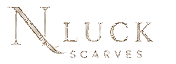

Anda sekarang menjadi bagian dari Limited Signature Collection yang diproduksi secara eksklusif dan hanya dimiliki oleh sedikit orang.
"Infinia" melambangkan perjalanan hidup yang terus bertumbuh tanpa batas. Garis-garis yang saling terhubung melambangkan iman, ilmu, dan amal baik yang selalu menyertai setiap langkah seorang muslimah.
Semoga hijab ini menjadi pengingat untuk terus berjalan dalam kebaikan, dengan hati yang teguh dan penuh keberkahan.
رَبِّ اشْرَحْ لِي صَدْرِي وَيَسِّرْ لِي أَمْرِي وَاحْلُلْ عُقْدَةً مِنْ لِسَانِي يَفْقَهُوا قَوْلِي
"Ya Tuhanku, lapangkanlah untukku dadaku, mudahkanlah untukku urusanku, dan lepaskanlah kekakuan dari lidahku, supaya mereka mengerti perkataanku." (QS. Thaha: 25–28)
اللَّهُمَّ لَا سَهْلَ إِلَّا مَا جَعَلْتَ سَهْلًا وَأَنْتَ تَجْعَلُ الْحَزْنَ إِذَا شِئْتَ سَهْلًا
"Ya Allah, tidak ada kemudahan kecuali yang Engkau jadikan mudah, dan Engkaulah yang menjadikan kesedihan (kesulitan), jika Engkau kehendaki pasti menjadi mudah."
يَا مُقَلِّبَ الْقُلُوبِ ثَبِّتْ قَلْبِي عَلَى دِينِكَ
"Wahai Dzat yang membolak-balikkan hati, tetapkanlah hatiku pada agama-Mu." (HR. Tirmidzi)
رَبِّ زِدْنِي عِلْمًا وَارْزُقْنِي فَهْمًا وَاجْعَلْنِي مِنَ الصَّالِحِينَ
"Ya Tuhanku, tambahkanlah kepadaku ilmu dan berilah aku pemahaman, dan jadikanlah aku termasuk orang-orang yang saleh." (QS. Taha: 114)
رَبَّنَا آتِنَا فِي الدُّنْيَا حَسَنَةً وَفِي الْآخِرَةِ حَسَنَةً وَقِنَا عَذَابَ النَّارِ
"Ya Tuhan kami, berikanlah kepada kami kebaikan di dunia dan kebaikan di akhirat dan lindungilah kami dari azab neraka." (QS. Al-Baqarah: 201)
Teruslah melangkah dengan yakin, karena setiap kebaikan yang dilakukan dengan ikhlas akan selalu bernilai di sisi Allah.
Semoga hijab ini selalu menjadi teman dalam setiap perjalananmu untuk menjadi pribadi yang lebih baik, berilmu, dan penuh keberkahan.
Isi data di samping untuk menjadi member dan dapatkan berbagai keuntungan eksklusif hanya untuk Anda.
Dapatkan diskon spesial untuk pembelian berikutnya.